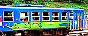
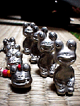
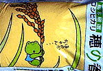
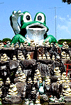

|
カエル列車で古里にカエル！ 【兵庫発=けろけろ同志記者】錦川鉄道（山口県岩国）のかえる列車について報告します。錦川鉄道にも「かえる」列車があると聞き６月号が「かえる時刻表」になっているＪＲの時刻表を片手に錦町駅まで行ってみると、なんと列車の横一面にかえる君が描かれているではありませんか。その名は「かじか号 MIKAWA」。この日はかえる列車はお休みで車庫にいるのを撮影しました。みんなも山口に行ったら「かじか号」に乗ろう。。 【全国かえる奉賛会】カエラー指定列車として買い取りたいものである。カエル列車の人気は爆発するはずなので、カジカ号の２号列車発注にあたっては、最初から列車全部がカエルになっているようなデザインにしておきましょー。旧国鉄のＪＲさん、よろしくー。
ケロ天市場がモロー第六期分譲を開始！ 【けろ天市場管理人】この時間に、カエル新聞を見に来た人には、朗報であるー。けろ天市場で、モロー商会の第六期分譲が始まりました。今回は携帯ストラップだけではなく、モローキーホルダーやモローペーパーウエイトが分譲されています。いますぐにでかけてみましょう。
カエルのモローが金属化！小倉で大行進？！【福岡発=モロー寺井師同志記者】７月１日から１５日まで、福岡県北九州市小倉区の小倉井筒屋新館３階『ニュークリエイターズショップ』で、プチかえる展小倉場所を開催します。カエルのモロー君のフィギュア、携帯ストラップ、キーホルダーや、カエルサボテンなどを展示即売します。福岡かえる展２で、買えなかった人や、来れなかった人は、ここに来ましょう！
カエル絵のコシヒカリ「穂の香」！ 【横浜発=伊藤正勝、薫同志記者】我が家の主食となっている栃木県産コシヒカリ「穂の香」です。この米は近所の酒屋で買物をしているとき、たまたま「いわむら かずお氏」の描いたカエルの絵に引かれて衝動買いした事はカエラーの皆様なら容易に想像がつくと思います。福岡の店で入手可能かどうか分かりませんが、参考に販売業者の連絡先を記しておきます。最近は余り店頭で見かけなくなり寂しい限りです。 『神糧物産株式会社』横浜市西区浅間町4丁目332番地(代)TEL045-312-2641
全国かえる奉賛会推薦米に指定！【全国かえる奉賛会】カエラー推奨の指定米にしましょう。みんなで食べて、カエル米を支援しようではありませんかー。健在なり！のじりこぴあカエル帝國！ 【宮崎発=秋丸信夫師匠閣下】えびの便りの取材で車を走らせている時、カエルの巣を見つけましたので参考までにお知らせします。家から約車で30分あまり行ったところに野尻町がありますが、そこの「のじりこぴあ」というレジャーランドの入り口にさまざまな表情をしたカエル200匹あまりを飾った「ケロケロ（帰ろう、帰ろう）共和国」があります。滝が流れ、かえるの鳴き声が聞こえます。 たて看板によると「のじりこぴあのマスコットキャラクター（U-ターンカエル）として登場。若者をはじめ町民の定住促進と町外在住者が心の安らぎを求め早期にU-ターンすることにより、町がさらに活生化して栄えるようにとの願いが込められています」とあります。過疎化する町の願いが込められています。
【全国かえる奉賛会】取材活動ごくろうさまです。壮観なカエル帝國は、平成８年6月9日号以来のごぶさただが、郷土を愛する熱血な宮崎県人の手で、立派に生息しているようでなによりである。宮崎県人は来年は、ここでカエルの祭典をひらきましょー！
TEXTかえる新聞を創刊！【全国かえる奉賛会】かえる新聞をテキストバージョンで読みたいという声が、せっかちな世の中、あちこちから出てきたので、ほんとうは、めんどうなのだが、ためしに作ってみた。７月１日から配達開始だ。でもなー、本物の新聞を見に来いよなー。テキストだと絵がないので、楽しさ半減ではないかあ。
投稿採用者に武功カエル徽章を授与！ |
かえる古新聞過去に取り上げた記事を見出し付きで一覧したい人は、ここをクリック◆創刊号を見る◆先週号を見る◆話題の号を見る◆かえる新聞の昔を読む
|
私も入っています。。全国かえる奉賛会
大王様に会うには、このバナーをクリック。ずっと奥に写真館があるぞ。全国かえる奉賛会に入会するには、自分のホームページのどこかに、下の部分を追加するとバナーがリンク付きで表示されるぞ。どんどん入会しましょー |


|